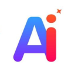

O Microsoft Copilot consolidou-se como uma das ferramentas de IA mais poderosas para produtividade, atuando como um assistente inteligente integrado nativamente ao ecossistema do Windows e do Microsoft 365. Utilizando modelos avançados (como o GPT-4 e sucessores), ele vai além de responder perguntas, sendo capaz de criar apresentações no PowerPoint a partir de um rascunho, analisar dados complexos em planilhas do Excel e resumir reuniões em tempo real no Teams. Em sua fase atual em 2026, a ferramenta destaca-se pela capacidade de agente autônomo, conseguindo não apenas sugerir textos, mas executar tarefas coordenadas entre diferentes aplicativos, sempre respeitando rigorosos protocolos de segurança corporativa e privacidade de dados.
O Claude consolidou-se no mercado como uma inteligência artificial que prioriza a segurança, a ética e a naturalidade na comunicação através de sua abordagem de "IA Constitucional". Em suas versões mais recentes, como o Claude 4.6, a ferramenta destaca-se por uma janela de contexto massiva (capaz de processar centenas de páginas de uma só vez) e por uma capacidade de escrita que mimetiza o tom humano com precisão excepcional, evitando clichês comuns de outros modelos. Além de ser uma referência absoluta em programação e lógica complexa com o Claude Code, ele é altamente valorizado por profissionais que buscam análises profundas de documentos extensos e uma interação mais reflexiva, sendo capaz de admitir suas limitações e agir de forma mais transparente em tarefas de raciocínio avançado.